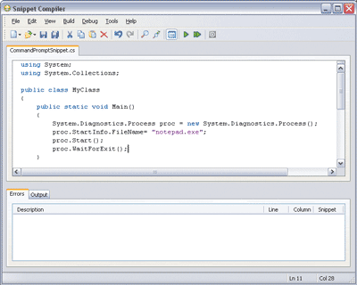

本文使用了下列技术： .NET、C# 或 Visual Basic .NET、Visual Studio .NET 除非您使用能够获得的最佳工具，否则您无法期望生成一流的应用程序。除了像 Visual Studio®.NET 这样的著名工具以外，还可以从 .NET 社区获得许多小型的、不太为人所知的工具。在本文中，我将向您介绍一些目前可以获得的、面向 .NET 开发的最佳免费工具。我将引导您完成一个有关如何使用其中每种工具的快速教程 — 一些工具在许多时候可以使您节约一分钟，而另一些工具则可能彻底改变您编写代码的方式。因为我要在本篇文章中介绍如此之多的不同工具，所以我无法详尽讨论其中每种工具，但您应该了解到有关每种工具的足够信息，以便判断哪些工具对您的项目有用。 Snippet CompilerSnippet Compiler 是一个基于 Windows® 的小型应用程序，您可以通过它来编写、编译和运行代码。如果您具有较小的代码段，并且您不希望为其创建完整的 Visual Studio .NET 项目（以及伴随该项目的所有文件），则该工具将很有用。 例如，假设我希望向您说明如何从 Microsoft?.NET 框架中启动另一个应用程序。在 Snippet Compiler 中，我将通过新建一个能够创建小型控制台应用程序的文件开始。可以在该控制台应用程序的 Main 方法内部创建代码片段，而这正是我要在这里做的事情。下面的代码片段演示了如何从 .NET 框架中创建记事本实例： System.Diagnostics.Process proc = new System.Diagnostics.Process(); proc.StartInfo.FileName= "notepad.exe"; proc.Start(); proc.WaitForExit(); 当然该代码片段本身无法编译，而这正是 Snippet Compiler 的用武之地。图 1 显示了 Snippet Compiler 中的这一代码示例。

http://www.microsoft.com/china/MSDN/library/enterprisedevelopment/softwaredev/art/TMHTEDSDN01.gif 图 1 Snippet Compiler 要测试该代码片段，只须按 play（运行）按钮（绿色三角形），它就会在调试模式下运行。该代码片段将生成一个弹出式控制台应用程序，并且将显示记事本。当您关闭记事本时，该控制台应用程序也将关闭。 就我个人而言，我是在尝试为某位向我求助的人士创建一个小型示例时，才发现 Snippet Compiler 是如此宝贵的 — 如果不使用该工具，则我通常必须新建一个项目，确保每个部分都能编译通过，然后将代码片段发送给求助者，并删除该项目。Snippet Compiler 使得这一过程变得更加容易、更加愉快。 Snippet Compiler 由 Jeff Key 编写，并且可以从 http://www.sliver.com/dotnet/SnippetCompiler 下载。 RegulatorRegulator 是最后一个添加到我的头等工具清单中的。它是一种很有特色的工具，能够使生成和测试正则表达式变得很容易。人们对正则表达式重新产生了兴趣，因为它们在 .NET 框架中受到很好的支持。正则表达式用来基于字符、频率和字符顺序定义字符串中的模式。它们最常见的用途是作为验证用户输入有效性的手段或者作为在较大字符串中查找字符串的方法 — 例如，在 Web 页上查找 URL 或电子邮件地址。 Regulator 使您可以输入一个正则表达式以及一些针对其运行该表达式的输入内容。这样，在应用程序中实现该正则表达式之前，您可以了解它将产生什么效果以及它将返回哪些种类的匹配项。图 2 显示了带有简单正则表达式的 Regulator。 http://www.biplip.com/Portals/0/NewsImgs/300-37781.gif 图 2 文档中包含该正则表达式 — 在该示例中，它是 [0-9]*，应该匹配一行中任意数量的数字。右下侧的框中含有针对该正则表达式的输入，而左下侧的框显示了该正则表达式在输入内容中找到的匹配项。在这样的单独应用程序中编写和测试正则表达式，要比尝试在您的应用程序中处理它们容易得多。 Regulator 中的最佳功能之一是能够在 regexlib.com 搜索联机正则表达式库。例如，如果您在搜索框中输入字符串“phone”，您将找到 20 种以上能够匹配各种电话号码的不同的正则表达式，包括用于英国、澳大利亚的表达式以及其他许多电话号码。Regulator 由 Roy Osherove 编写，并且可以在 http://royo.is-a-geek.com/regulator 下载。 CodeSmithCodeSmith 是一种基于模板的代码生成工具，它使用类似于 ASP.NET 的语法来生成任意类型的代码或文本。与其他许多代码生成工具不同，CodeSmith 不要求您订阅特定的应用程序设计或体系结构。使用 CodeSmith，可以生成包括简单的强类型集合和完整应用程序在内的任何东西。 当您生成应用程序时，您经常需要重复完成某些特定的任务，例如编写数据访问代码或者生成自定义集合。CodeSmith 在这些时候特别有用，因为您可以编写模板自动完成这些任务，从而不仅提高您的工作效率，而且能够自动完成那些最为乏味的任务。CodeSmith 附带了许多模板，包括对应于所有 .NET 集合类型的模板以及用于生成存储过程的模板，但该工具的真正威力在于能够创建自定义模板。为了使您能够入门，我将快速介绍一下如何生成自定义模板。 生成自定义模板CodeSmith 模板只是一些可以在任意文本编辑器中创建的文本文件。它们的唯一要求是用 .cst 文件扩展名来保存它们。我将要生成的示例模板将接受一个字符串，然后基于该字符串生成一个类。创建模板的第一步是添加模板头，它可声明模板的语言、目标语言以及简要模板说明： <%@ CodeTemplate Language="C#" TargetLanguage="C#" Description="Car Template" %> 模板的下一部分是属性声明，在这里可声明将在模板每次运行时指定的属性。就该模板而言，我要使用的唯一属性只是一个字符串，因此属性声明如下所示： <%@ Property Name="ClassName" Type="String" Category="Context" Description="Class Name" %> 该属性声明将使 ClassName 属性出现在 CodeSmith 属性窗口中，以便可以在模板运行时指定它。下一步是实际生成模板主体，它非常类似于用 ASP.NET 进行编码。以下是该模板的主体： Custom Template public sealed class <%= ClassName %>
{
private static volatile <%= ClassName %> _instance;
private <%= ClassName %>() {}
private static readonly object _syncRoot = new object();
public static <%= ClassName %> Value
{
get
{
if (_instance == null)
{
lock(_syncRoot)
{
if (_instance == null)
{
_instance = new <%= ClassName %>();
}
}
}
return _instance;
}
}
}
SingletonClass public sealed class SingletonClass
{
private static volatile SingletonClass _instance;
private SingletonClass() {}
private static readonly object _syncRoot = new object();
public static SingletonClass Value
{
get
{
if (_instance == null)
{
lock(_syncRoot)
{
if (_instance == null)
{
_instance = new SingletonClass();
}
}
}
return _instance;
}
}
}
正如您所见，该模板接受字符串输入并使用该类名生成单独的类。在模板主体中，使用与 ASP.NET 中相同的起始和结束标记。在该模板中，我只是插入属性值，但您还可以在这些标记内部使用任意类型的 .NET 代码。在该模板完成之后，您就可以通过双击它或者从 CodeSmith 应用程序中打开它将其加载到 CodeSmith 中。图 4 显示了已经加载到 CodeSmith 中的该模板。 http://www.biplip.com/Portals/0/NewsImgs/300-38875.gif 图 4 您可以看到左侧的属性正是我在该模板中声明的属性。如果我输入“SingletonClass”作为类名，并单击 Generate 按钮，则将生成模板代码底部显示的类。 CodeSmith 使用起来相当容易，如果能够正确应用，则可以产生一些令人难以置信的结果。面向代码生成的应用程序中最常见的部分之一是数据访问层。CodeSmith 包括一个名为 SchemaExplorer 的特殊的程序集，可用来从表、存储过程或几乎任何其他 SQL Server? 对象生成模板。 CodeSmith 由 Eric J. Smith 编写，并且可以在 http://www.ericjsmith.net/codesmith 下载。 NUnitNUnit 是为 .NET 框架生成的开放源代码单元测试框架。NUnit 使您可以用您喜欢的语言编写测试，从而测试应用程序的特定功能。当您首次编写代码时，单元测试是一种测试代码功能的很好方法，它还提供了一种对应用程序进行回归测试的方法。NUnit 应用程序提供了一个用于编写单元测试的框架，以及一个运行这些测试和查看结果的图形界面。 编写 NUnit 测试作为示例，我将测试 .NET 框架中 Hashtable 类的功能，以确定是否可以添加两个对象并且随后检索这些对象。我的第一步是添加对 NUnit.Framework 程序集的引用，该程序集将赋予我对 NUnit 框架的属性和方法的访问权。接下来，我将创建一个类并用 TestFixture 属性标记它。该属性使 NUnit 可以知道该类包含 NUnit 测试： using System;
using System.Collections;
using NUnit.Framework;
namespace NUnitExample
{
[TestFixture]
public class HashtableTest {
public HashtableTest() {
}
}
}
下一步，我将创建一个方法并用 [Test] 属性标记它，以便 NUnit 知道该方法是一个测试。然后，我将建立一个 Hashtable 并向其添加两个值，再使用 Assert.AreEqual 方法查看我是否可以检索到与我添加到 Hashtable 的值相同的值，如下面的代码所示： [Test]
public void HashtableAddTest()
{
Hashtable ht = new Hashtable();
ht.Add("Key1", "Value1");
ht.Add("Key2", "Value2");
Assert.AreEqual("Value1", ht["Key1"], "Wrong object returned!");
Assert.AreEqual("Value2", ht["Key2"], "Wrong object returned!");
}
这将确认我可以首先向 Hashtable 中添加值并随后检索相应的值 — 这是一个很简单的测试，但能够表现 NUnit 的功能。存在许多测试类型以及各种 Assert 方法，可使用它们来测试代码的每个部分。 要运行该测试，我需要生成项目，在 NUnit 应用程序中打开生成的程序集，然后单击 Run 按钮。图 5 显示了结果。当我看到那个大的绿色条纹时，我有一种兴奋和头晕的感觉，因为它让我知道测试已经通过了。这个简单的示例表明 NUnit 和单元测试是多么方便和强大。由于能够编写可以保存的单元测试，并且每当您更改代码时都可以重新运行该单元测试，您不仅可以更容易地检测到代码中的缺陷，而且最终能够交付更好的应用程序。  http://www.biplip.com/Portals/0/NewsImgs/300-4078.gif 图 5 NUnit NUnit 是一个开放源代码项目，并且可以从 http://www.nunit.org 下载。还有一个优秀的 NUnit Visual Studio .NET 外接程序，它使您可以直接从 Visual Studio 中运行单元测试。您可以在 http://sourceforge.net/projects/nunitaddin 找到它。有关 NUnit 及其在测试驱动开发中的地位的详细信息，请参阅文章“Test-Driven C#: Improve the Design and Flexibility of Your Project with Extreme Programming Techniques”（MSDN ®Magazine 2004 年 4 月刊）。 FxCop.NET 框架非常强大，这意味着存在创建优秀应用程序的极大可能，但是也同样存在创建劣质程序的可能。FxCop 是有助于创建更好的应用程序的工具之一，它所采用的方法是：使您能够分析程序集，并使用一些不同的规则来检查它是否符合这些规则。FxCop 随附了由 Microsoft 创建的固定数量的规则，但您也可以创建并包括您自己的规则。例如，如果您决定所有的类都应该具有一个不带任何参数的默认构造函数，则可以编写一条规则，以确保程序集的每个类上都具有一个构造函数。这样，无论是谁编写该代码，您都将获得一定程度的一致性。如果您需要有关创建自定义规则的详细信息，请参阅 John Robbins 的有关该主题的 Bugslayer 专栏文章（MSDN ® Magazine 2004 年 6 月刊）。 那么，让我们观察一下实际运行的 FxCop，并且看一下它在我一直在处理的 NUnitExample 程序集中找到哪些错误。当您打开 FxCop 时，您首先需要创建一个 FxCop 项目，然后向其添加您要测试的程序集。在将该程序集添加到项目以后，就可以按 Analyze，FxCop 将分析该程序集。图 6 中显示了在该程序集中找到的错误和警告。 http://www.biplip.com/Portals/0/NewsImgs/300-41125.gif 图 6 FxCop 在我的程序集中找到了几个问题。您可以双击某个错误以查看详细信息，包括规则说明以及在哪里可以找到更多信息。（您可以做的一件有趣的事情是在框架程序集上运行 FxCop 并查看发生了什么事情。） FxCop 可以帮助您创建更好的、更一致的代码，但它无法补偿低劣的应用程序设计或非常简单拙劣的编程。FxCop 也不能替代对等代码检查，但是因为它可以在进行代码检查之前捕获大量错误，所以您可以花费更多时间来解决严重的问题，而不必担心命名约定。FxCop 由 Microsoft 开发，并且可以从 http://www.gotdotnet.com/team/fxcop 下载。 Lutz Roeder 的 .NET Reflector下一个必不可少的工具称为 .NET Reflector，它是一个类浏览器和反编译器，可以分析程序集并向您展示它的所有秘密。.NET 框架向全世界引入了可用来分析任何基于 .NET 的代码（无论它是单个类还是完整的程序集）的反射概念。反射还可以用来检索有关特定程序集中包含的各种类、方法和属性的信息。使用 .NET Reflector，您可以浏览程序集的类和方法，可以分析由这些类和方法生成的 Microsoft 中间语言 (MSIL)，并且可以反编译这些类和方法并查看 C# 或 Visual Basic ®.NET 中的等价类和方法。 为了演示 .NET Reflector 的工作方式，我将加载和分析前面已经显示的 NUnitExample 程序集。图 7 显示了 .NET Reflector 中加载的该程序集。  http://www.biplip.com/Portals/0/NewsImgs/300-42125.gif 图 7 NUnitExample 程序集 在 .NET Reflector 内部，有各种可用来进一步分析该程序集的工具。要查看构成某个方法的 MSIL，请单击该方法并从菜单中选择 Disassembler。 除了能够查看 MSIL 以外，您还可以通过选择 Tools 菜单下的 Decompiler 来查看该方法的 C# 形式。通过在 Languages 菜单下更改您的选择，您还可以查看该方法被反编译到 Visual Basic .NET 或 Delphi 以后的形式。以下为 .NET Reflector 生成的代码： public void HashtableAddTest()
{
Hashtable hashtable1;
hashtable1 = new Hashtable();
hashtable1.Add("Key1", "Value1");
hashtable1.Add("Key2", "Value2");
Assert.AreEqual("Value1", hashtable1["Key1"],
"Wrong object returned!");
Assert.AreEqual("Value2", hashtable1["Key2"],
"Wrong object returned!");
}
前面的代码看起来非常像我为该方法实际编写的代码。以下为该程序集中的实际代码： public void HashtableAddTest()
{
Hashtable ht = new Hashtable();
ht.Add("Key1", "Value1");
ht.Add("Key2", "Value2");
Assert.AreEqual("Value1", ht["Key1"],
"Wrong object returned!");
Assert.AreEqual("Value2", ht["Key2"],
"Wrong object returned!");
}
尽管上述代码中存在一些小的差异，但它们在功能上是完全相同的。 虽然该示例是一种显示实际代码与反编译代码之间对比的好方法，但在我看来，它并不代表 .NET Reflector 所具有的最佳用途 — 分析 .NET 框架程序集和方法。.NET 框架提供了许多执行类似操作的不同方法。例如，如果您需要从 XML 中读取一组数据，则存在多种使用 XmlDocument、XPathNavigator 或 XmlReader 完成该工作的不同方法。通过使用 .NET Reflector，您可以查看 Microsoft 在编写数据集的 ReadXml 方法时使用了什么，或者查看他们在从配置文件读取数据时做了哪些工作。.NET Reflector 还是一个了解以下最佳实施策略的优秀方法：创建诸如 HttpHandlers 或配置处理程序之类的对象，因为您可以了解到 Microsoft 工作组实际上是如何在框架中生成这些对象的。 .NET Reflector 由 Lutz Roeder 编写，并且可以从 http://www.aisto.com/roeder/dotnet 下载。 NDoc编写代码文档资料几乎总是一项令人畏惧的任务。我所说的不是早期设计文档，甚至也不是更为详细的设计文档；我说的是记录类上的各个方法和属性。NDoc 工具能够使用反射来分析程序集，并使用从 C# XML 注释生成的 XML 自动为代码生成文档资料。XML 注释仅适用于 C#，但有一个名为 VBCommenter 的 Visual Studio .NET Power Toy，它能够为 Visual Basic .NET 完成类似的工作。此外，下一版本的 Visual Studio 将为更多语言支持 XML 注释。 使用 NDoc 时，您仍然在编写代码的技术文档，但您是在编写代码的过程中完成了文档编写工作（在 XML 注释中），而这更容易忍受。使用 NDoc 时，第一步是为您的程序集打开 XML 注释生成功能。右键单击该项目并选择 Properties | Configuration Properties | Build，然后在 XML Documentation File 选项中输入用于保存 XML 文件的路径。当该项目生成时，将创建一个 XML 文件，其中包含所有 XML 注释。下面是 NUnit 示例中的一个用 XML 编写了文档的方法： /// <summary>
/// This test adds a number of values to the Hashtable collection
/// and then retrieves those values and checks if they match.
/// </summary>
[Test]
public void HashtableAddTest()
{
//Method Body Here
}
有关该方法的 XML 文档资料将被提取并保存在 XML 文件中，如下所示： <member name="M:NUnitExample.HashtableTest.HashtableAddTest"> <summary>This test adds a number of values to the Hashtable collection and then retrieves those values and checks if they match.</summary> </member> NDoc 使用反射来考察您的程序集，然后读取该文档中的 XML，并且将它们进行匹配。NDoc 使用该数据来创建任意数量的不同文档格式，包括 HTML 帮助文件 (CHM)。在生成 XML 文件以后，下一步是将程序集和 XML 文件加载到 NDoc 中，以便可以对它们进行处理。通过打开 NDoc 并单击 Add 按钮，可以容易地完成该工作。 在将程序集和 XML 文件加载到 NDoc 中并且使用可用的属性范围自定义输出以后，单击 Generate 按钮将启动生成文档资料的过程。使用默认的属性，NDoc 可以生成一些非常吸引人并且实用的 .html 和 .chm 文件，从而以快速有效的方式自动完成原来非常乏味的任务。 NDoc 是一个开放源代码项目，并且可以从 http://ndoc.sourceforge.net 下载。 NAntNAnt 是一个基于 .NET 的生成工具，与当前版本的 Visual Studio .NET 不同，它使得为您的项目创建生成过程变得非常容易。当您拥有大量从事单个项目的开发人员时，您不能依赖于从单个用户的座位进行生成。您也不希望必须定期手动生成该项目。您更愿意创建每天晚上运行的自动生成过程。NAnt 使您可以生成解决方案、复制文件、运行 NUnit 测试、发送电子邮件，等等。遗憾的是，NAnt 缺少漂亮的图形界面，但它的确具有可以指定应该在生成过程中完成哪些任务的控制台应用程序和 XML 文件。注意，MSBuild（属于 Visual Studio 2005 的新的生成平台）为每种健壮的生成方案进行了准备，并且由基于 XML 的项目文件以类似的方式驱动。 实际运行的 NAnt在该示例中，我将为前面创建的 NUnitExample 解决方案创建一个 NAnt 版本文件。首先，我需要创建一个具有 .build 扩展名的 XML 文件，将其放在我的项目的根目录中，然后向该文件的顶部添加一个 XML 声明。我需要添加到该文件的第一个标记是 project 标记： <?xml version="1.0"?> <project name="NUnit Example" default="build" basedir="."> <description>The NUnit Example Project</description> </project> 项目标记还用于设置项目名称、默认目标以及基目录。Description 标记用于设置该项目的简短说明。 接下来，我将添加 property 标记，该标记可用于将设置存储到单个位置（随后可以从文件中的任意位置访问该位置）。在该例中，我将创建一个名为 debug 的属性，我可以随后将其设置为 true 或 false，以反映我是否要在调试配置下编译该项目。（最后，这一特定属性并未真正影响如何生成该项目；它只是您设置的一个变量，当您真正确定了如何生成该项目时将读取该变量。） 接下来，我需要创建一个 target 标记。一个项目可以包含多个可在 NAnt 运行时指定的 target。如果未指定 target，则使用默认 target（我在 project 元素中设置的 target）。在该示例中，默认 target 是 build。让我们观察一下 target 元素，它将包含大多数生成信息： <target name="build" description="compiles the source code"> </target> 在 target 元素内，我将把 target 的名称设置为 build，并且创建有关该 target 将做哪些工作的说明。我还将创建一个 csc 元素，该元素用于指定应该传递给 csc C# 编译器的数据。让我们看一下该 csc 元素： <csc target="library" output=".\bin\debug\NUnitExample.dll"
debug="${debug}">
<references>
<includes name="C:\program files\NUnit V2.1\bin\NUnit.Framework.dll"/>
</references>
<sources>
<includes name="HashtableTest.cs"/>
</sources>
</csc>
首先，我必须设置该 csc 元素的 target。在该例中，我将创建一个 .dll 文件，因此我将 target 设置为 library。接下来，我必须设置 csc 元素的 output，它是将要创建 .dll 文件的位置。最后，我需要设置 debug 属性，它确定了是否在调试中编译该项目。因为我在前面创建了一个用于存储该值的属性，所以我可以使用下面的字符串来访问该属性的值：${debug}。Csc 元素还包含一些子元素。我需要创建两个元素：references 元素将告诉 NAnt 需要为该项目引用哪些程序集，sources 元素告诉 NAnt 要在生成过程中包含哪些文件。在该示例中，我引用了 NUnit.Framework.dll 程序集并包含了 HashtableTest.cs 文件。以下代码中显示了完整的生成文件。（您通常还要创建一个干净的 target，用于删除生成的文件，但为了简洁起见，我已经将其省略。） <?xml version="1.0"?>
<project name="NUnit Example" default="build" basedir=".">
<description>The NUnit Example Project</description>
<property name="debug" value="true"/>
<target name="build" description="compiles the source code">
<csc target="library" output=".\bin\debug\NUnitExample.dll"
debug="${debug}">
<references>
<includes name="C:\program files\NUnit
V2.1\bin\NUnit.Framework.dll" />
</references>
<sources>
<includes name="HashtableTest.cs"/>
</sources>
</csc>
</target>
</project>
要生成该文件，我需要转到我的项目的根目录（生成文件位于此处），然后从该位置执行 nant.exe。如果生成成功，您可以在该应用程序的 bin 目录中找到 .dll 和 .pdb 文件。尽管使用 NAnt 肯定不像在 Visual Studio 中单击 Build 那样简单，但它仍然是一种非常强大的工具，可用于开发按自动计划运行的生成过程。NAnt 还包括一些有用的功能，例如能够运行单元测试或者复制附加文件（这些功能没有受到当前 Visual Studio 生成过程的支持）。 NAnt 是一个开放源代码项目，并且可以从 http://nant.sourceforge.net 下载。 转换工具我已经将两个独立的工具合在一起放在标题“转换工具”下面。这两个工具都非常简单，但又可能极为有用。第一个工具是 ASP.NET 版本转换器，它可用于转换 ASP.NET（虚拟目录在它下面运行）的版本。第二个工具是 Visual Studio Converter，它可用于将项目文件从 Visual Studio .NET 2002 转换到 Visual Studio .NET 2003。 当 IIS 处理请求时，它会查看正在请求的文件的扩展名，然后基于该 Web 站点或虚拟目录的扩展名映射，将请求委派给 ISAPI 扩展或者自己处理该请求。这正是 ASP.NET 的工作方式；将为所有 ASP.NET 扩展名注册扩展名映射，并将这些扩展名映射导向 aspnet_isapi.dll。这种工作方式是完美无缺的，除非您安装了 ASP.NET 1.1 — 它会将扩展名映射升级到新版本的 aspnet_isapi.dll。当在 ASP.NET 1.0 上生成的应用程序试图用 1.1 版运行时，这会导致错误。要解决该问题，可以将所有扩展名映射重新转换到 1.0 版的 aspnet_isapi.dll，但是由于有 18 种扩展名映射，所以手动完成这一工作将很枯燥。这正是 ASP.NET 版本转换器可以发挥作用的时候。使用这一小型实用工具，可以转换任何单个 ASP.NET 应用程序所使用的 .NET 框架的版本。  http://www.biplip.com/Portals/0/NewsImgs/300-43218.gif 图 9 ASP.NET 版本转换器 图 9 显示了实际运行的 ASP.NET 版本转换器。它的使用方法非常简单，只须选择相应的应用程序，然后选择您希望该应用程序使用的 .NET 框架版本。该工具随后将使用 aspnet_regiis.exe 命令行工具将该应用程序转换到所选版本的框架。随着将来版本的 ASP.NET 和 .NET 框架的发布，该工具将变得更为有用。 ASP.NET 版本转换器由 Denis Bauer 编写，并且可以从 http://www.denisbauer.com/NETTools/ASPNETVersionSwitcher.aspx 下载。 Visual Studio .NET 项目转换器（参见图 10）非常类似于 ASP.NET 版本转换器，区别在于它用于转换 Visual Studio 项目文件的版本。尽管在 .NET 框架的 1.0 版和 1.1 版之间只有很小的差异，但一旦将项目文件从 Visual Studio .NET 2002 转换到 Visual Studio .NET 2003，将无法再把它转换回去。虽然这在大多数时候可能不会成为问题（因为在 .NET 框架 1.0 版和 1.1 版之间几乎没有什么破坏性的更改），但在某些时刻您可能需要将项目转换回去。该转换器可以将任何解决方案或项目文件从 Visual Studio 7.1 (Visual Studio .NET 2003) 转换到 Visual Studio 7.0 (Visual Studio .NET 2002)，并在必要时进行反向转换。  http://www.biplip.com/Portals/0/NewsImgs/300-44390.gif 图 10 Visual Studio .NET 项目转换器 Visual Studio .NET 项目转换器由 Dacris Software 编写。该工具可以从 http://www.codeproject.com/macro/vsconvert.asp 下载。 |